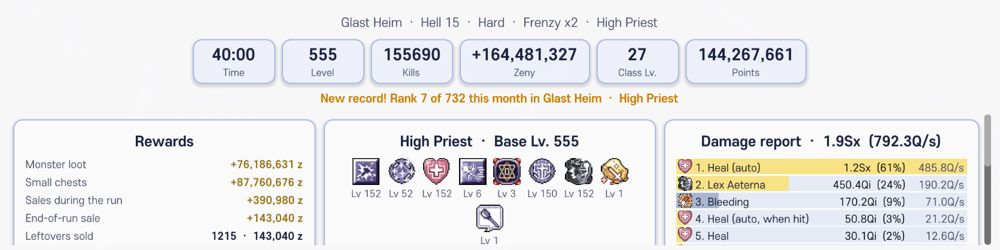

High-Priest Quadrille: Heal Smite x Lex Aeterna
A High Priest that clears Hell 15 with Heal procs: the Soul of Quadrille turns every Heal into a holy explosion, and Lex Aeterna multiplies those explosions by about ×20.
Build byMochi
This build
Made for Hell 15
This is a Hell 15 build for maps like Glast Heim, shared by Mochi on the Midgard Survivors Discord. It is not an Emperium Festival build: for the Festival, the Quadrille Champion is still stronger.Proof: rank 7 in Glast Heim
Glast Heim, Hell 15, Hard, Frenzy ×2, patch 0.2.8: 40:00, Base Lv 555, 155,690 kills, 144,267,661 points, rank 7 of 732 High Priests that month. Another player reached rank 4 with the build.
How it works
- Why Aspersio and Mace Mastery at level 1. Aspersio is what lets basic attacks place Lex Aeterna. Mace Mastery makes your basic attack and its procs use INT instead of STR, so INT boosts the Heal explosions.
- No cards that cast other skills. Any other skill hit spends the Lex Aeterna mark on a weak hit. The only procs here are Heal.
- DEX is the main stat. It scales the Heal explosions, Signum Crucis, Meltdown and Blessing. LUK gives crit damage and legendary chance.
Gear
Star Potential: all stats and crit damage. Trait: Resonant (procs trigger more often) on the weapon, face and mouth.
Pet and Plagiarism
Pet
Fallen Randgris — +10% damage and +10% crit damage. For more survival, Turtle General.Avoid Fallen Bishop here: its ×2 mark replaces the ×20 Lex Aeterna mark.
Plagiarism
Meltdown — copy it from an Archdam with a Thief-line character and set it as the shared skill.Skills and stats
Where the skills ended in Mochi's run (Base Lv 555). Increase AGI was later raised to 10 after more testing.
| Skill | Level |
|---|---|
| Heal | 152 |
| Lex Aeterna | 152 |
| Meltdown | 152 |
| Signum Crucis | 150 |
| Blessing | 52 |
| Increase AGI | 6 → 10 |
| Judgment of Asgard | 3 |
| Aspersio | 1 |
| Mace Mastery | 1 |
Stats
LUK to 100, then DEX with no limit, INT to 100. STR and AGI do nothing here: Mace Mastery replaces STR with INT.VIT
Optional, up to 20 if you need more survival. It does not raise the main Heal explosions; it only slightly raises the Heal cast when you are hit.Upgrade priority
Upgrade priority
| # | Upgrade | Level limit | Banish at limit |
|---|---|---|---|
| 1 | LUK | 100 | yes |
| 2 | Judgment of Asgard | 1 | yes |
| 3 | Aspersio | 1 | yes |
| 4 | Mace Mastery | 1 | yes |
| 5 | DEX | no limit | — |
| 6 | Signum Crucis | 150 | yes |
| 7 | Meltdown | 150 | yes |
| 8 | Lex Aeterna | 150 | yes |
| 9 | Blessing | 50 | yes |
| 10 | Heal | 150 | yes |
| 11 | INT | 100 | yes |
| 12 | Increase AGI | 10 | yes |
Judgment of Asgard at level 1 is there so Signum Crucis can evolve into Signum Crucis EX.
Banish (Holy Water)
Everything that is not in the priority list is banished at the start.
During the run
Pacts
Pact of Overload · Agony · Pact of GraceOverload multiplies the procs; Agony grows with poison, burn and bleeding; Grace strengthens your buffs and the Lex Aeterna mark when it is cast.
Dishes
Mastela Fruit Wine · Immortal Stew · Steamed TongueImmortal Stew for more HP; Steamed Tongue's basic damage also raises the proc damage.
- Valkyrie route. Hel for maximum damage (Mochi measured up to 10× more with every Valkyrie reward and chest); Valhalla for survival if you only want to reach Hel floor 100. Hell 15 Glast Heim also works on the White Valkyrie route.
- Tower of Hel variant. Mochi found Lex Aeterna much weaker on high Tower of Hel floors. There, swap Lex Aeterna for Assumptio with a limit of 5 (to get Assumptio EX) and banish Aspersio. This version can also AFK farm Hell 15.
- More survival. Some players swap Meltdown for Gangster's Paradise and add Assumptio. Mochi notes it costs damage.
High-Priest Quadrille: Heal Smite x Lex Aeterna
Um High Priest que fecha o Hell 15 com procs de Heal: a Soul of Quadrille transforma cada Heal numa explosão sagrada, e o Lex Aeterna multiplica essas explosões por cerca de ×20.
Build porMochi
Esta build
Feita para o Hell 15
Esta é uma build de Hell 15 para mapas como Glast Heim, compartilhada pelo Mochi no Discord do Midgard Survivors. Não é uma build de Emperium Festival: para o Festival, o Quadrille Champion continua mais forte.Prova: rank 7 em Glast Heim
Glast Heim, Hell 15, Hard, Frenzy ×2, patch 0.2.8: 40:00, Base Lv 555, 155.690 abates, 144.267.661 pontos, rank 7 de 732 High Priests no mês. Outro jogador chegou ao rank 4 com a build.Como funciona
- Por que Aspersio e Mace Mastery no nível 1. O Aspersio é o que deixa o ataque básico colocar o Lex Aeterna. A Mace Mastery faz o ataque básico e os procs usarem INT no lugar de STR, então a INT aumenta as explosões de Heal.
- Nada de cartas que lançam outras skills. Qualquer outro golpe de skill gasta a marca do Lex Aeterna num golpe fraco. Os únicos procs aqui são de Heal.
- DEX é o atributo principal. Escala as explosões de Heal, o Signum Crucis, o Meltdown e o Blessing. A LUK dá dano crítico e chance de lendário.
Equipamento
Star Potential: todos os atributos e dano crítico. Trait: Resonant (procs saem mais vezes) na arma, no rosto e na boca.
Pet e Plagiarism
Pet
Fallen Randgris — +10% de dano e +10% de dano crítico. Para mais sobrevivência, Turtle General.Evite o Fallen Bishop aqui: a marca ×2 dele substitui a marca ×20 do Lex Aeterna.
Plagiarism
Meltdown — copie de um Archdam com um personagem da linha Thief e defina como skill compartilhada.Skills e atributos
Onde as skills terminaram na run do Mochi (Base Lv 555). O Increase AGI subiu depois para 10, após mais testes.
| Skill | Nível |
|---|---|
| Heal | 152 |
| Lex Aeterna | 152 |
| Meltdown | 152 |
| Signum Crucis | 150 |
| Blessing | 52 |
| Increase AGI | 6 → 10 |
| Judgment of Asgard | 3 |
| Aspersio | 1 |
| Mace Mastery | 1 |
Atributos
LUK até 100, depois DEX sem limite, INT até 100. STR e AGI não fazem nada aqui: a Mace Mastery troca STR por INT.VIT
Opcional, até 20 se precisar de mais sobrevivência. Não aumenta as explosões principais de Heal; só aumenta um pouco o Heal lançado quando você apanha.Prioridade de upgrades
Prioridade de upgrades
| # | Upgrade | Limite | Banir no limite |
|---|---|---|---|
| 1 | LUK | 100 | sim |
| 2 | Judgment of Asgard | 1 | sim |
| 3 | Aspersio | 1 | sim |
| 4 | Mace Mastery | 1 | sim |
| 5 | DEX | sem limite | — |
| 6 | Signum Crucis | 150 | sim |
| 7 | Meltdown | 150 | sim |
| 8 | Lex Aeterna | 150 | sim |
| 9 | Blessing | 50 | sim |
| 10 | Heal | 150 | sim |
| 11 | INT | 100 | sim |
| 12 | Increase AGI | 10 | sim |
O Judgment of Asgard no nível 1 está aí para o Signum Crucis evoluir para Signum Crucis EX.
Banir (Holy Water)
Tudo que não está na lista de prioridade é banido no início.
Durante a run
Pactos
Pact of Overload · Agony · Pact of GraceO Overload multiplica os procs; o Agony cresce com veneno, queimadura e sangramento; o Grace fortalece seus buffs e a marca do Lex Aeterna quando ele é lançado.
Pratos
Mastela Fruit Wine · Immortal Stew · Steamed TongueImmortal Stew para mais HP; o dano básico do Steamed Tongue também aumenta o dano dos procs.
- Rota das Valquírias. Hel para dano máximo (o Mochi mediu até 10× mais com todas as recompensas e baús das Valquírias); Valhalla para sobrevivência se você só quer chegar ao andar 100 do Hel. Hell 15 em Glast Heim também funciona na rota da Valquíria Branca.
- Variante Tower of Hel. O Mochi viu o Lex Aeterna bem mais fraco nos andares altos da Tower of Hel. Lá, troque o Lex Aeterna por Assumptio com limite 5 (para pegar o Assumptio EX) e bana o Aspersio. Essa versão também farma Hell 15 em AFK.
- Mais sobrevivência. Alguns jogadores trocam o Meltdown por Gangster's Paradise e adicionam Assumptio. O Mochi avisa que isso custa dano.
High-Priest Quadrille: Heal Smite x Lex Aeterna
Un High Priest que supera Hell 15 con procs de Heal: la Soul of Quadrille convierte cada Heal en una explosión sagrada, y Lex Aeterna multiplica esas explosiones por cerca de ×20.
Build deMochi
Esta build
Hecha para Hell 15
Esta es una build de Hell 15 para mapas como Glast Heim, compartida por Mochi en el Discord de Midgard Survivors. No es una build de Emperium Festival: para el Festival, el Quadrille Champion sigue siendo más fuerte.Prueba: rank 7 en Glast Heim
Glast Heim, Hell 15, Hard, Frenzy ×2, parche 0.2.8: 40:00, Base Lv 555, 155.690 muertes, 144.267.661 puntos, rank 7 de 732 High Priests ese mes. Otro jugador llegó al rank 4 con la build.Cómo funciona
- Por qué Aspersio y Mace Mastery a nivel 1. Aspersio es lo que permite que el ataque básico ponga Lex Aeterna. Mace Mastery hace que el ataque básico y sus procs usen INT en vez de STR, así que la INT aumenta las explosiones de Heal.
- Nada de cartas que lancen otras habilidades. Cualquier otro golpe de habilidad gasta la marca de Lex Aeterna en un golpe débil. Los únicos procs aquí son de Heal.
- DEX es el atributo principal. Escala las explosiones de Heal, Signum Crucis, Meltdown y Blessing. La LUK da daño crítico y probabilidad de legendario.
Equipo
Star Potential: todos los atributos y daño crítico. Trait: Resonant (los procs salen más a menudo) en el arma, la cara y la boca.
Mascota y Plagiarism
Pet
Fallen Randgris — +10% de daño y +10% de daño crítico. Para más supervivencia, Turtle General.Evita Fallen Bishop aquí: su marca ×2 reemplaza la marca ×20 de Lex Aeterna.
Plagiarism
Meltdown — cópiala de un Archdam con un personaje de la línea Thief y ponla como habilidad compartida.Habilidades y atributos
Dónde terminaron las habilidades en la partida de Mochi (Base Lv 555). Increase AGI se subió luego a 10 tras más pruebas.
| Skill | Nivel |
|---|---|
| Heal | 152 |
| Lex Aeterna | 152 |
| Meltdown | 152 |
| Signum Crucis | 150 |
| Blessing | 52 |
| Increase AGI | 6 → 10 |
| Judgment of Asgard | 3 |
| Aspersio | 1 |
| Mace Mastery | 1 |
Atributos
LUK hasta 100, luego DEX sin límite, INT hasta 100. STR y AGI no hacen nada aquí: Mace Mastery cambia STR por INT.VIT
Opcional, hasta 20 si necesitas más supervivencia. No aumenta las explosiones principales de Heal; solo sube un poco el Heal lanzado al recibir golpes.Prioridad de mejoras
Prioridad de mejoras
| # | Mejora | Límite | Desterrar al límite |
|---|---|---|---|
| 1 | LUK | 100 | sí |
| 2 | Judgment of Asgard | 1 | sí |
| 3 | Aspersio | 1 | sí |
| 4 | Mace Mastery | 1 | sí |
| 5 | DEX | sin límite | — |
| 6 | Signum Crucis | 150 | sí |
| 7 | Meltdown | 150 | sí |
| 8 | Lex Aeterna | 150 | sí |
| 9 | Blessing | 50 | sí |
| 10 | Heal | 150 | sí |
| 11 | INT | 100 | sí |
| 12 | Increase AGI | 10 | sí |
Judgment of Asgard a nivel 1 está para que Signum Crucis evolucione a Signum Crucis EX.
Desterrar (Holy Water)
Todo lo que no está en la lista de prioridad se destierra al inicio.
Durante la partida
Pactos
Pact of Overload · Agony · Pact of GraceOverload multiplica los procs; Agony crece con veneno, quemadura y sangrado; Grace refuerza tus buffs y la marca de Lex Aeterna cuando se lanza.
Platos
Mastela Fruit Wine · Immortal Stew · Steamed TongueImmortal Stew para más HP; el daño básico de Steamed Tongue también sube el daño de los procs.
- Ruta de Valquirias. Hel para daño máximo (Mochi midió hasta 10× más con todas las recompensas y cofres de Valquiria); Valhalla para supervivencia si solo quieres llegar al piso 100 de Hel. Hell 15 en Glast Heim también funciona en la ruta de la Valquiria Blanca.
- Variante Tower of Hel. Mochi vio Lex Aeterna mucho más débil en los pisos altos de la Tower of Hel. Allí, cambia Lex Aeterna por Assumptio con límite 5 (para obtener Assumptio EX) y destierra Aspersio. Esta versión también farmea Hell 15 en AFK.
- Más supervivencia. Algunos jugadores cambian Meltdown por Gangster's Paradise y añaden Assumptio. Mochi avisa que cuesta daño.
High-Priest Quadrille：治療神擊 x Lex Aeterna
以治療觸發打完 Hell 15 的神官：Quadrille 之魂讓每次治療變成神聖爆炸，Lex Aeterna 再把爆炸放大約 ×20。
流派作者Mochi
這個流派
為 Hell 15 打造
這是 Mochi 在 Midgard Survivors Discord 分享的 Hell 15 流派，適合 Glast Heim 等地圖。這不是 Emperium Festival 流派：Festival 仍以 Quadrille Champion 更強。實證：Glast Heim 第 7 名
0.2.8 版 Glast Heim Hell 15（Hard、Frenzy ×2）：40:00、Base Lv 555、155,690 擊殺，144,267,661 分，當月 732 名神官中第 7 名。另一位玩家用此流派達到第 4 名。運作原理
- 為何 Aspersio 與 Mace Mastery 只要 1 級。Aspersio 讓普攻能施加 Lex Aeterna。Mace Mastery 讓普攻與其觸發改用 INT 取代 STR，INT 因此提升治療爆炸。
- 不要用會施放其他技能的卡片。其他技能命中會把 Lex Aeterna 標記浪費在弱攻擊上。這裡只用治療觸發。
- DEX 是主屬性。提升治療爆炸、Signum Crucis、Meltdown 與 Blessing。LUK 提供暴擊傷害與傳說機率。
裝備
星之潛能：全屬性與暴擊傷害。特性：武器、臉部、嘴部用 Resonant（觸發更頻繁）。
寵物與剽竊
Pet
Fallen Randgris — +10% 傷害與 +10% 暴擊傷害。想更耐打可用 Turtle General。這裡避免 Fallen Bishop：牠的 ×2 標記會蓋掉 ×20 的 Lex Aeterna 標記。
Plagiarism
Meltdown — 用盜賊系角色從 Archdam 複製，並設為共享技能。技能與能力值
Mochi 通關時的技能等級（Base Lv 555）。之後經測試把 Increase AGI 提高到 10。
| Skill | 等級 |
|---|---|
| Heal | 152 |
| Lex Aeterna | 152 |
| Meltdown | 152 |
| Signum Crucis | 150 |
| Blessing | 52 |
| Increase AGI | 6 → 10 |
| Judgment of Asgard | 3 |
| Aspersio | 1 |
| Mace Mastery | 1 |
能力值
LUK 到 100，之後 DEX 無上限，INT 到 100。STR 與 AGI 在此無用：Mace Mastery 以 INT 取代 STR。VIT
選用，需要生存時最多 20。不會提升主要的治療爆炸，只略微提升受擊時施放的治療。強化優先順序
強化優先順序
| # | 強化 | 上限 | 達上限放逐 |
|---|---|---|---|
| 1 | LUK | 100 | 是 |
| 2 | Judgment of Asgard | 1 | 是 |
| 3 | Aspersio | 1 | 是 |
| 4 | Mace Mastery | 1 | 是 |
| 5 | DEX | 無上限 | — |
| 6 | Signum Crucis | 150 | 是 |
| 7 | Meltdown | 150 | 是 |
| 8 | Lex Aeterna | 150 | 是 |
| 9 | Blessing | 50 | 是 |
| 10 | Heal | 150 | 是 |
| 11 | INT | 100 | 是 |
| 12 | Increase AGI | 10 | 是 |
Judgment of Asgard 1 級是為了讓 Signum Crucis 進化為 Signum Crucis EX。
放逐（聖水）
不在優先清單中的全部在開局放逐。
遊戲中
契約
Pact of Overload · Agony · Pact of Grace超載放大觸發；痛苦隨中毒、燃燒、流血疊加；恩典強化增益與施放時的 Lex Aeterna 標記。
料理
Mastela Fruit Wine · Immortal Stew · Steamed TongueImmortal Stew 增加 HP；Steamed Tongue 的普攻傷害也提升觸發傷害。
- 女武神路線。Hel 追求最大傷害（Mochi 實測拿滿女武神獎勵與寶箱最多 10 倍）；只想到 Hel 第 100 層則選 Valhalla 求生存。Glast Heim Hell 15 走白色女武神路線也可以。
- Tower of Hel 變體。Mochi 發現 Lex Aeterna 在 Tower of Hel 高樓層弱很多。在那裡把 Lex Aeterna 換成 Assumptio，上限 5（以取得 Assumptio EX），並放逐 Aspersio。此版本也能 AFK 刷 Hell 15。
- 更高生存。有些玩家把 Meltdown 換成 Gangster's Paradise 並加入 Assumptio。Mochi 提醒這會損失傷害。